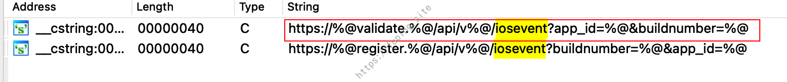
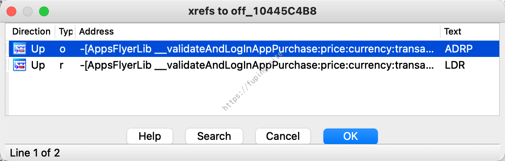
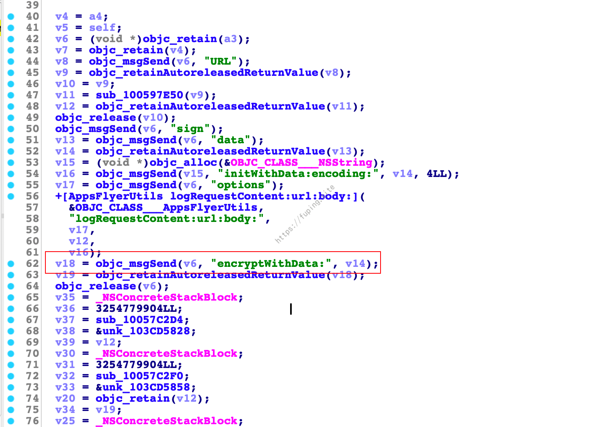
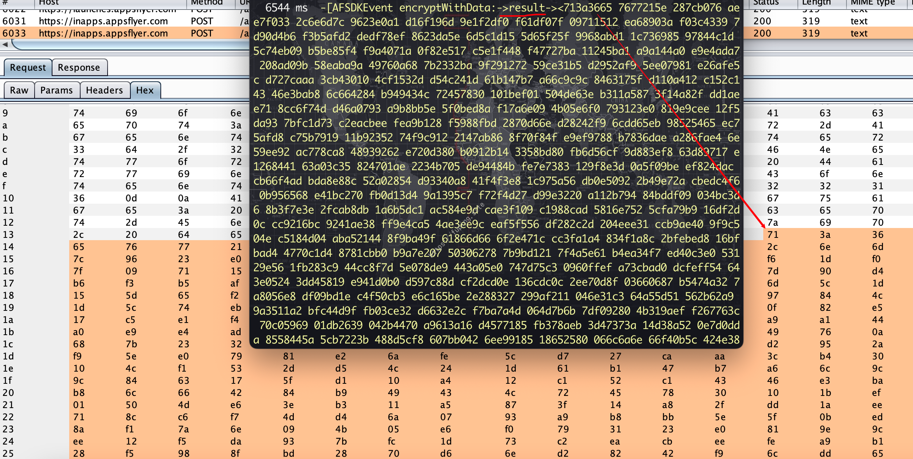
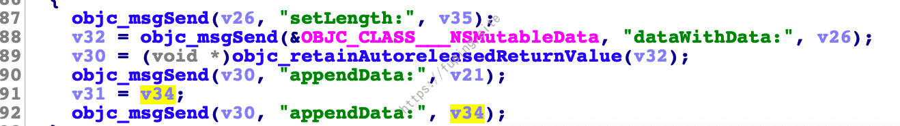

IOS逆向之appsflyer平台解密
0x00 前言
前段时间有这样一个需求，需要抓一下IOS端下appsflyer这个平台的数据，于是就帮忙看了一下。这里其实和APP没多大关系，需要接入appsflyer这个平台的APP就可以，然后将抓包获取的加密数据进行解密。
0x01 准备
给我的并不是一个ipa文件，而是一个压缩包文件。
Payload.zip其实就是ipa文件进行解压后再压缩而来的，但是修改文件名直接安装是不行的，需要重新签名。
这里将文件重命名为1.ipa，不进行签名，然后使用命令ideviceinstaller -i 1.ipa进行安装，结果安装失败。
可以使用命令安装，也可以借助其他工具安装，如Xcode、爱思助手等。
签名的话也有多种方法，我这里使用IOS App Signer进行签名。
签名后重新安装
1 | ideviceinstaller -i 1-sign.ipa |
签名后安装成功，对比源文件与签名后文件的签名。
接下来就是进行抓包分析了。
0x02 分析
运行app并抓包，会发现有很多请求，但每次打开APP与appsflyer有关的请求一般有三个，可以直接过滤出来。
可以看到请求的内容是乱码，应该是采用了某种加密。接下来使用ida对文件进行分析。
一般都是进行关键字的搜索，然后慢慢定位找到加密相关的函数，例如这里搜索的关键字是iosevent。

对比一下请求的URL，可能是第一个。
一直查找引用，直到发现-[AppsFlyerLib __validateAndLogInAppPurchase:price:currency:transactionId:additionalParameters:success:failure:]进行了调用。

使用frida-trace进行追踪frida-trace -U -f cn.fuping.hhrx -m "-[AppsFlyerLib __validateAndLogInAppPurchase:price:currency:transactionId:additionalParameters:success:failure:]"。
这里仍有三个appsflyer相关的请求，但是发现并没有对该方法进行调用，因此可能是找错了。
通过查看请求，可以看到Content-Type是application/octet-stream，所以也可去搜索application/octet-stream。
搜索application/octet-stream。
一直查找引用，最终定位在-[AppsFlyerHTTPClient sendEvent:completionHandler:]方法中。

在其中也可以看到调用了与加密相关的内容-[AFSDKEvent encryptWithData:]。
使用frida-trace进行追踪
关键代码：
1 | { |
可以成功获取加密前的数据
加密后的结果也是一致的。接下来就是看加密是如何实现的，另外能否进行解密。

进入到-[AFSDKEvent encryptWithData:]方法，看是如何进行加密的。
通过分析发现其调用了-[AFSDKEvent key]获取key，这里key是固定的，为X3sgfYhYXWhDoD8DhW2aaJ。然后调用+[AppsFlyerAES128Crypto encrypt:withObject:]进行加密。继续跟进加密的方法。
1 | CCCrypt(0LL, 0LL, 1LL, v19, v20, v22, v24, v25, v27, v28, &v35) |
这里看到了CCCrypt函数的调用，可以先了解一下该函数，然后分析加密流程。
使用CCCrypt进行加密时，需要引入CommonCrypto/CommonCryptor.h框架。
其中CCCrypt函数定义：
1 | CCCryptorStatus CCCrypt( |
一共有11个参数，参数简要说明如下：
| 参数 | 说明 | 备注 |
|---|---|---|
| CCOperation op | 加密(kCCEncrypt=0) | |
| 解密(kCCDecrypt=1) | 这里是加密 | |
| CCAlgorithm alg | 加解密算法标准 | |
| kCCAlgorithmAES128=0, | ||
| kCCAlgorithmAES=0 | 这里为kCCAlgorithmAES128或者kCCAlgorithmAES加密 | |
| CCOptions options | 加密方式的选项 | |
| kCCOptionPKCS7Padding表示CBC | ||
| kCCOptionECBMode表示ECB | ||
| kCCOptionPKCS7Padding|kCCOptionECBMode表示ECB且PKCS7Padding填充 | 这里为CBC加密，且用PKCS7Padding进行填充 | |
| const void *key | 加密密钥 | 固定值 |
| size_t keyLength | 密钥长度 | |
| const void *iv | iv 初始化向量，ECB 不需要指定 | 随机值 |
| const void *dataIn | 加密的数据 | |
| size_t dataInLength | 加密的数据长度 | |
| void *dataOut | 缓冲区（地址），存放密文的 | |
| size_t dataOutAvailable | 缓冲区的大小 | |
| size_t *dataOutMoved | 加密结果大小 | |
然后转过头来分析加密的流程。首先调用了+[AppsFlyerAES128Crypto randomDataOfLength:]生成了一个16byte的随机字符作为iv。
接着调用+[AppsFlyerAES128Crypto AESKeyForPassword:salt:]对key进行解密，解密后的的结果作为加密的key值，为84adf6ec41acb6cbeb349d0a7078f0d2。
最后调用CCCrypt进行加密，加密方法是AES-CBC。

加密完成后将IV和8位00与加密数据进行拼接。所以可以直接根据请求的数据进行解密。
例如上面的请求包共分为三部分，第一部分为加密后的内容，第二部分为IV，长度为16，这里是b820980ed08844945179a96721bbbcd3，第三部分为0，长度为8。
然后进行解密：
成功解密数据，到这里任务就完成了。
其实在搜索的时候也可以搜索其他关键字，例如buildnumber。
被圈中的两个字符串与URL进行对比，相似度很高。可以进一步去分析查找引用进行分析。
另外这里的加密用到了CCCrypt函数，所以也可以直接对其进行追踪，例如
1 | frida-trace -U -f xxxx -i CCCrypt |
然后修改libcommonCrypto.dylib下的CCCrypt.js文件，主要代码：
1 | { |
效果如下：
也是可以进行加密数据的解析。
0x03 总结
本文主要涉及部分内容，一是ios APP签名，另外就是加密函数CCCrypt。该函数是IOS加密中常用的函数，在分析的时候可以直接使用frida-trace -U -f xxxx -i CCCrypt来查看加密是否调用了该函数，然后进行数据解密。